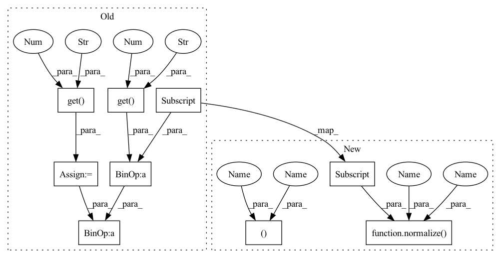

Pattern ID :382

Before Change
conv_locs = F.elu(self.conv(locs)).permute(0, 2, 1)
dist_gap_mean = self.data_feature.get("dist_gap_mean", 0.274716042312)
dist_gap_std = self.data_feature.get("dist_gap_std", 0.127051674693)
current_dis = (batch["current_dis"] - dist_gap_mean) / dist_gap_std
// calculate the dist for local paths
local_dist = get_local_seq(current_dis, self.kernel_size, dist_gap_mean, dist_gap_std, self.device)
After Change
conv_locs = F.elu(self.conv(locs)).permute(0, 2, 1)
dist_gap_mean, dist_gap_std = self.data_feature["dist_gap_mean"], self.data_feature["dist_gap_std"]
current_dis = normalize(batch["current_dis"], dist_gap_mean, dist_gap_std)
// calculate the dist for local paths
local_dist = get_local_seq(current_dis, self.kernel_size, dist_gap_mean, dist_gap_std, self.device)
local_dist = torch.unsqueeze(local_dist, dim=2)
In pattern: SUPERPATTERN
Frequency: 4
Non-data size: 9
Instances
Fragment ID: 1421783
Project Name: libcity/bigscity-libcity
Commit Name: cab95b3cb593a94b61a1b781d97ef62ca1afc41e
Time: 2021-12-26
Author: 1152090685@qq.com
File Name: libcity/model/eta/DeepTTE.py
M Class Name: GeoConv
N Class Name: GeoConv
M Method Name: forward(2)
N Method Name: forward(2)
M Parent Class: nn.Module
N Parent Class: nn.Module
M File Name: libcity/model/eta/DeepTTE.py
N File Name: libcity/model/eta/DeepTTE.py
M Start Line: 79
M End Line: 100
N Start Line: 86
N End Line: 104
'>
Before Change
em_list.append(attr_t)
dist_mean = self.data_feature.get("dist_mean", 9.578281194509781)
dist_std = self.data_feature.get("dist_std", 3.9656010701306283)
dist = (batch["dist"] - dist_mean) / dist_std
dist = (dist - dist_mean) / dist_std
em_list.append(dist)
After Change
em_list.append(attr_t)
dist_mean, dist_std = self.data_feature["dist_mean"], self.data_feature["dist_std"]
dist = normalize(batch["dist"], dist_mean, dist_std)
dist = normalize(dist, dist_mean, dist_std)
em_list.append(dist)
return torch.cat(em_list, dim=1)
'>
Fragment ID: 1421809
Project Name: libtraffic/bigscity-libtraffic
Commit Name: cab95b3cb593a94b61a1b781d97ef62ca1afc41e
Time: 2021-12-26
Author: 1152090685@qq.com
File Name: libcity/model/eta/DeepTTE.py
M Class Name: Attr
N Class Name: Attr
M Method Name: forward(2)
N Method Name: forward(2)
M Parent Class: nn.Module
N Parent Class: nn.Module
M File Name: libcity/model/eta/DeepTTE.py
N File Name: libcity/model/eta/DeepTTE.py
M Start Line: 56
M End Line: 59
N Start Line: 64
N End Line: 66
'>
Before Change
longi_std = self.data_feature.get("longi_std", 0.04988770679679998)
current_longi = (batch["current_longi"] - longi_mean) / longi_std
lngs = torch.unsqueeze(current_longi, dim=2)
lati_mean = self.data_feature.get("lati_mean", 30.652312982784895)
lati_std = self.data_feature.get("lati_std", 0.04988770679679998)
current_lati = (batch["current_lati"] - lati_mean) / lati_std
lats = torch.unsqueeze(current_lati, dim=2)
states = self.state_em(batch["current_state"].long())
After Change
longi_mean, longi_std = self.data_feature["longi_mean"], self.data_feature["longi_std"]
current_longi = normalize(batch["current_longi"], longi_mean, longi_std)
lngs = torch.unsqueeze(current_longi, dim=2)
lati_mean, lati_std = self.data_feature["lati_mean"], self.data_feature["lati_std"]
current_lati = normalize(batch["current_lati"], lati_mean, lati_std)
lats = torch.unsqueeze(current_lati, dim=2)
states = self.state_em(batch["current_state"].long())
'>
Fragment ID: 1421810
Project Name: libtraffic/bigscity-libtraffic
Commit Name: cab95b3cb593a94b61a1b781d97ef62ca1afc41e
Time: 2021-12-26
Author: 1152090685@qq.com
File Name: libcity/model/eta/DeepTTE.py
M Class Name: GeoConv
N Class Name: GeoConv
M Method Name: forward(2)
N Method Name: forward(2)
M Parent Class: nn.Module
N Parent Class: nn.Module
M File Name: libcity/model/eta/DeepTTE.py
N File Name: libcity/model/eta/DeepTTE.py
M Start Line: 79
M End Line: 100
N Start Line: 86
N End Line: 104